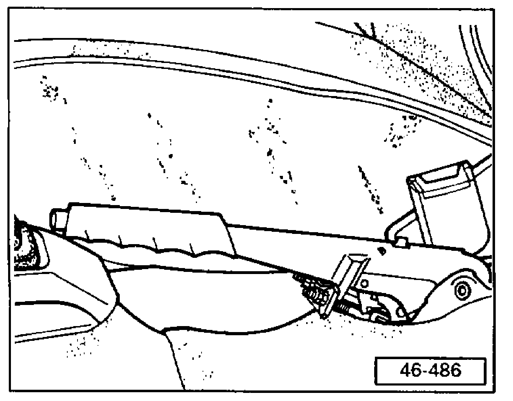

With Rear Drum Brakes
Parking Brake AdjustingAdjustment of the parking brake is only necessary after replacing the parking brake cables, the backing plate or the brake linings.
Release parking brake.
Depress brake pedal firmly one time.
Pull parking brake lever up until four clicks are heard.

Turn adjustment nuts until both rear wheels can just be turned by hand
Release parking brake and check that both rear wheels rotate freely.